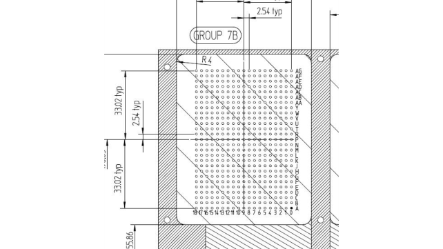
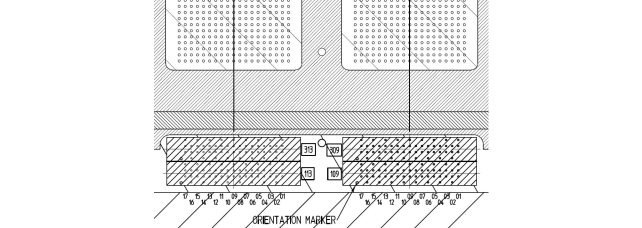

Pin naming for Twinning pogo segments
Pin naming for standard pogo segments
The Twinning family board is responsible for the transformation between the V93000 pogo pin channels and the Twinning DUT board pogo pin channels. V93000 standard channels have fixed naming (for example 11001) that describe the signal pin location. The ground pin locations are fixed. For the Twinning side of the family board there are no fixed signal or ground pin assignments. Each block or group has a fixed number (for example 7A) and each pin in a segment/group has a number (for example AG1) as shown on the figure below (complete drawings can be found in Twinning DUT and family board info).

Pin naming for high-speed pogo segments
For the high-speed pogo segment the pin numbering is different from the standard pogo segment. As shown in the figure below (and in details under Twinning DUT and family board info), each Twinning segment has a standard pogo segment and on the inner 8 segments they also each have 2 high-speed pogo segments. Since each of these pogo segments are located above a V93000 pogo block location and uses a pin configuration equivalent to a standard density pogo pin block, they are assigned the same pogo pin numbering as their position on the V93000 DUT interface (for example 319 or 113).

Functional changes
- Introduced in SmarTest 8.2.0